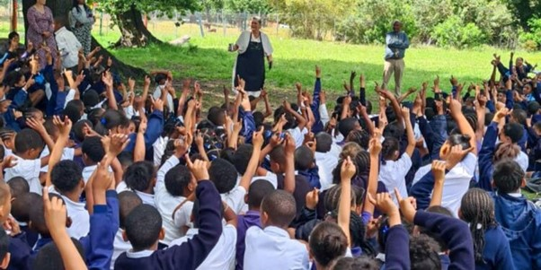
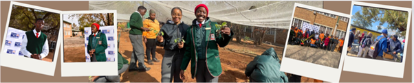

PROMOTING ACCESS TO FRESH FRUIT AND VEGETABLES THROUGH SUSTAINABLE FOOD GARDENING
Food insecurity is becoming a big problem in Southern Africa, and we think that we can help end food insecurity through educating communities, schools and households about food gardens.
Our Mission
As first-year students at Tshwane University of Technology's Faculty of ICT, our group was assigned a project to investigate the theme: Food Security Through Garden Projects.
This website presents our summaries of food garden case studies found online and provides our recommendations for how the community can engage in these projects to secure food.
Your Investigation Steps
- Internet Research: We used videos, articles, and websites to find established food gardens.
- Case Study Analysis: We selected and documented five diverse food garden projects.
- Data Summaries: We compiled our findings into simple charts and summaries.
- Developing Recommendations: Based on our research, we developed suggestions for improvement.
A Glimpse into Our Research
Our research focused on 5 distinct food garden projects. Below are a few examples.
Case Study 1: LR Schmidt Primary School Garden - Genadendal Valley, Western Cape
This food garden was launched by the Humane Society International/Africa's (HSI/Africa) Green Monday SA programme. It has enabled LR Schmidt Primary School and Emil Weder Secondary School to create a food garden that enhances the nutritional quality of meals by offering a variety of plant-based options.
The nutritious plant-based options include a protein-rich soy curry with mixed vegetables and herbs, a colourful salad made from cabbage, carrots, raisins, and beetroot with homemade mayo, and sweet potato chocolate brownies as a healthy dessert option.
This food garden initiative feeds over 500 learners daily by growing and cooking a range of vegetables including spinach, cabbage, carrots, turnips, spring onions, herbs, sweet potato, leeks and cauliflower.
Most of the food grown in this garden is used to feed the learners, whereas a minority (40%) is sold to the local community to fund important pantry items like spices, vinegar, salt and pepper etc
Case Study 2: Ingqaizivele Secondary School
This school is in Thembisa, Ekurhuleni, and has a massive food garden that is well maintained by the dedicated community members of Thembisa. The food garden's produce aids the school's feeding scheme. Excess produce is then sold to fund things like the purchase of compost, seedlings and better access to water.
Case Study 3: Ingqaizivele Secondary School
This school is in Thembisa, Ekurhuleni, and has a massive food garden that is well maintained by the dedicated community members of Thembisa. The food garden's produce aids the school's feeding scheme. Excess produce is then sold to fund things like the purchase of compost, seedlings and better access to water.